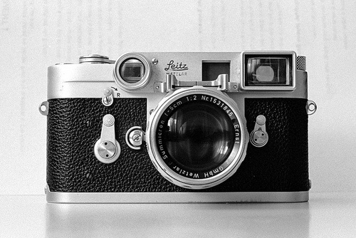

Ano 1954
Leica M3
Uma obra-prima da mecânica alemã. Famosa por introduzir o visor telemétrico integrado e se tornar a câmera favorita de lendas como Henri Cartier-Bresson para fotografia de rua e fotojornalismo.
Ver Galeria